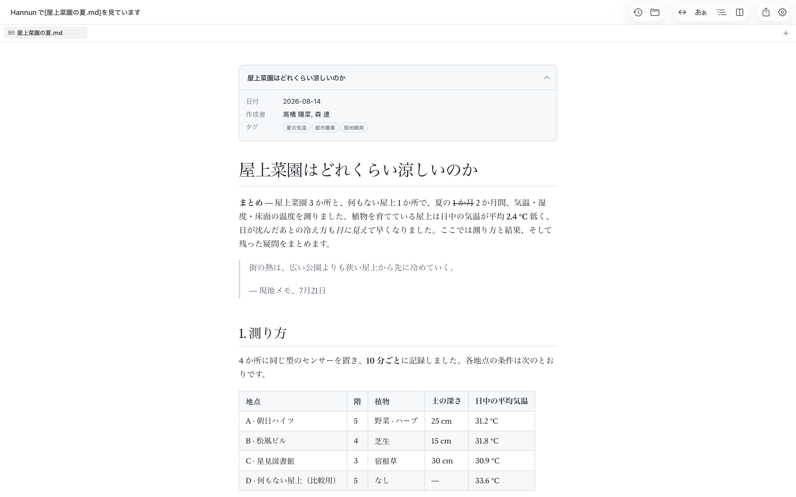
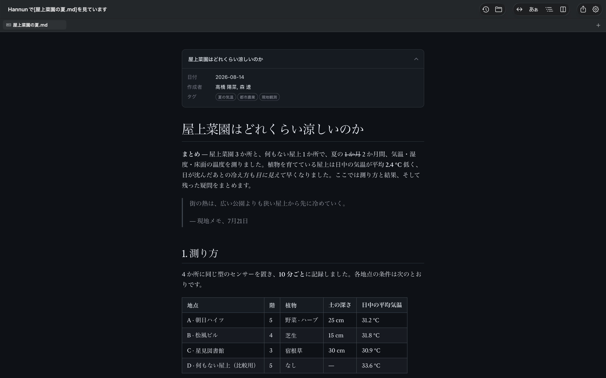
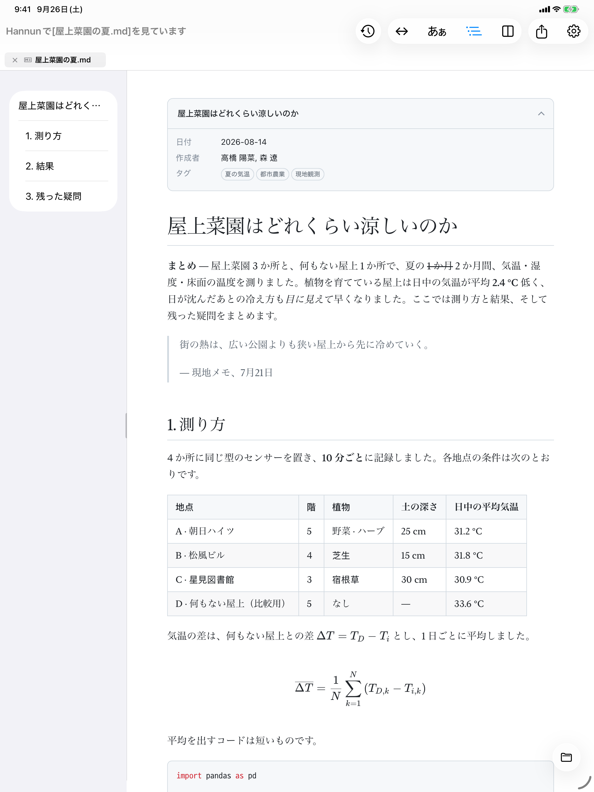
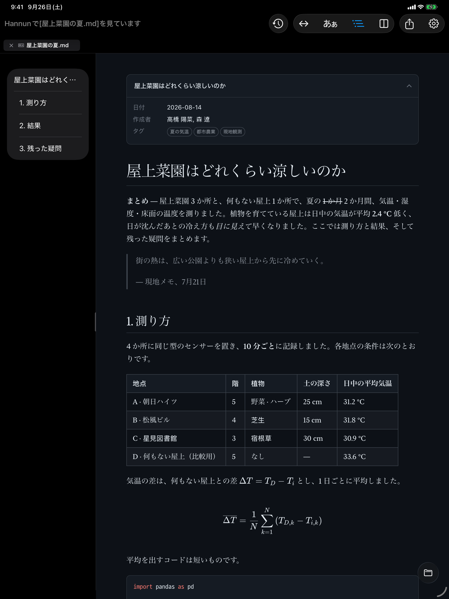
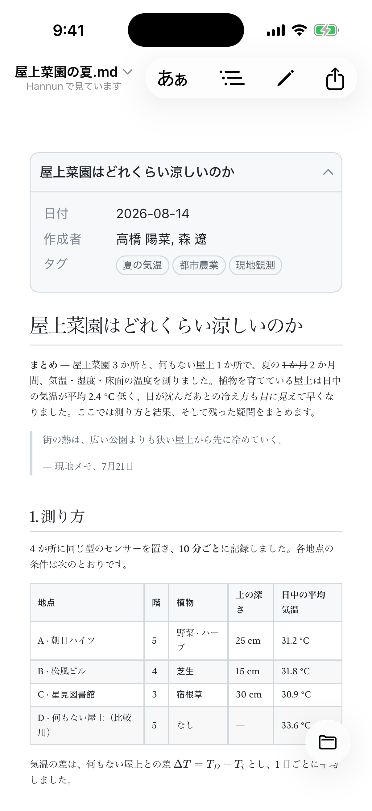
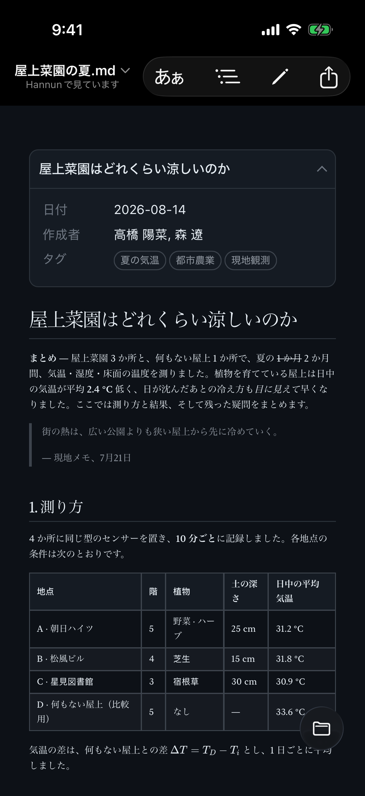

Markdown ビューアMaciPadiPhone
Markdown は、
ダブルクリックだけ。
Hannun（ハンヌン）は、韓国語で「ひと目で」という意味です。Markdown ファイルを開くのに手間をかけなくていいように、開いた瞬間に読める形で表示します。
上の画面はスクリーンショットではなく、Hannun と同じエンジンで実際に動いています。自由に書き換えてみてください。入力した内容がこのブラウザの外に送られることはありません。
作業中の画面に割り込みません
関係のない Markdown ファイルをひとつ見るだけのために、開いているプロジェクトやブラウザを散らかしたくありませんでした。
VS Code で開く今のプロジェクトのウインドウに混ざるブラウザにドラッグするタブがまたひとつ増える拡張機能を入れて、ファイルへのアクセスを許可する設定のどこかで- ファイルをダブルクリックする別に開いて、閉じれば終わり
先にアプリを起動してファイルを探しに行く必要もありません。ファイルを開くだけで済みます。
元のファイルは、
そのままに。
文字コード、BOM、改行コードを変えずに保存します。1 文字直せば、変わるのはその 1 文字だけです。
Git で管理している文書なら、この差は大きいです。改行コードや文字コードが変わると、直したのは 1 行なのに git diff ではファイル全体が変わったように見えます。Hannun で保存すれば、diff に残るのは実際に直した行だけ。レビューする人も、あとで見返す自分も迷いません。
表を揃え直し、リスト記号や改行コードを自分の流儀で書き換えて保存するエディタの例
直した行だけが変わります
長い文書も、読みやすく
表やチェックボックス、コードのハイライト、数式、図まで、きれいに表示します。本文の幅と書体は好みに合わせて選べます。
このページで試してみてください。下のボタンを押すと、いま読んでいるこのページがその場で変わります。
本文と見出しは別々に選べます。見出しは明朝、本文はゴシック、その逆も可能です。
- 目次文書の見出しを左のパネルにまとめて表示します。パネルの幅はドラッグで調整でき、次回もそのまま残ります。
- 拡大画像や図はクリックすると大きく表示できます。図はベクターなので、どこまで拡大してもくっきりしています。
- ダークモードライト、ダーク、システム設定に合わせる、から選べます。
- 拡大 · 縮小ピンチ、または ⌘+ ⌘−。プレビュー、エディタ、PDF のどこでも同じ操作です。
読みながら、そのまま直せます
⌘/ ひとつで、プレビュー、分割表示、編集を切り替えます。分割表示では左右のスクロールが連動します。
記法を覚える必要もありません。⌥ を押したままにすると、キーボードの配列どおりに並んだ記法パレットが表示されます。同じキーをもう一度押すと解除されます。
- 日本語入力日本語・韓国語・中国語の変換中に文字が崩れることはありません。勝手に書式を変えることもありません。
- 検索 · 置換プレビュー、エディタ、PDF のどこでも、同じ方法で検索・置換できます。
メモ帳のように書いて、
閉じても消えません
Windows のメモ帳のように、⌘N ですぐに書き始められます。ファイル名も保存場所も聞かれません。
アプリを閉じて開き直しても、書きかけの文章はそのまま残っています。いらなければ捨てて、残したいときだけ ⌘S で保存してください。保存形式は .md と .txt から選べます。
JSON、XML、PDF も開けます
データファイルは、折りたたんだり展開したりしながら読めます。最初はエディタと同じ見た目のソースで開き、名前と値だけを残したツリー、キー · 型 · 値に分けたリストにも切り替えられます。ツリーでは、同じ形の項目が並んでいると表にまとめて表示します。どの表示でも、数値や値はファイルに書かれたとおりに表示します。
下の画面の上にあるボタンで切り替えてみてください。
Mac でも、iPad でも、iPhone でも
Mac では Finder でダブルクリックするだけ。iPad と iPhone では、「ファイル」App にある文書をそのまま開けます。直した内容は元のファイルに保存されます。
ライトモードとダークモードはシステム設定に合わせて切り替わります。下の画面の中央の線を左右にドラッグして比べてみてください。






必要な機能は、そろっています
文書
- GFM の表 · チェックボックス · 取り消し線
- コードのハイライト
- KaTeX の数式
- Mermaid の図 22 種類
- YAML フロントマター
- 文書間リンク 新しいタブ
読む
- 本文の幅 4 段階
- 本文 · 見出しの書体を個別に選択
- 目次パネル
- 画像 · 図の拡大
- ライト · ダーク · 自動
編集
- プレビュー · 分割 · 編集
- スクロールの連動
- 記法パレット Mac
- エディタのハイライト
- 下書きの自動バックアップ
ファイル
- バイト単位でそのまま保存
- タブ · セッションの復元
- 外部での変更を検知
- クイックルック Mac
ほかの形式
- JSON · XML ソース · ツリー · リスト
- YAML ソース · 折りたたみ
- PDF の表示 · 書き出し
- .txt の編集
言語
- 日本語 · English
- 한국어 · 简体中文
ダブルクリックで Hannun が開くように
Mac では最初、.md ファイルはほかのアプリで開きます。Hannun の設定 › 一般 › デフォルトAppで一度設定しておけば、次からはダブルクリックするだけで Hannun で開きます。
デフォルトApp
文書は、端末の外に
出ていきません。
アカウントもログインも広告もありません。解析ツールもクラッシュレポートも組み込んでいません。プレビューは外部への接続を遮断しているので、文書の中の外部画像が勝手に読み込まれることもありません。
自分で使うために作りました
Markdown ファイルをひとつ開くのに、なぜこんなに手間がかかるのか。メモ帳のようにさっと書き留める機能も、たいしたものではないのに、しっくりくるアプリがありませんでした。
だから自分で作りました。自分でも使っているアプリなので、不便なところは私も同じように感じています。教えていただければ直します。
入手方法は 2 つあります
App Store
有料一度の購入ですべてのデバイスで
- すべての機能
- Mac · iPad · iPhone
- ファミリー共有 （最大 6 人）
- App Store で自動アップデート
先にお伝えしておくと、どちらも機能はまったく同じです。App Store 版には iPhone · iPad 版とファミリー共有が含まれ、ご購入は Hannun の開発を続ける大きな支えになります。
よくある質問
インターネット接続は必要ですか？
いいえ。文書を開く、読む、直すのにインターネットは使いません。数式、図、フォントはすべてアプリに入っています。
公式サイトからダウンロードした無料版（Mac）だけが、新しいバージョンの確認のために接続します。これは設定でオフにできます。
文書の中の画像が表示されません。
macOS のセキュリティの仕組み上、文書と同じフォルダにある画像を読むには一度許可が必要です。上に表示される案内バーのフォルダを許可をクリックしてください。
インターネット上のアドレスで指定された画像は読み込みません。読んでいる人を追跡するのに使われることがあるためです。
ファイルが書き換わったり、壊れたりしませんか？
Hannun は、開いたときの形式のまま保存します。文字コード、BOM、改行コードを変えることはありません。
ほかのアプリが同じファイルを変更すると、Hannun が読み直します。Hannun で編集中だった場合は、どちらを残すかを先に確認します。
Intel 搭載の Mac でも使えますか？
いいえ。macOS 26 以降を搭載した Apple シリコン（M1 以降）の Mac でお使いいただけます。